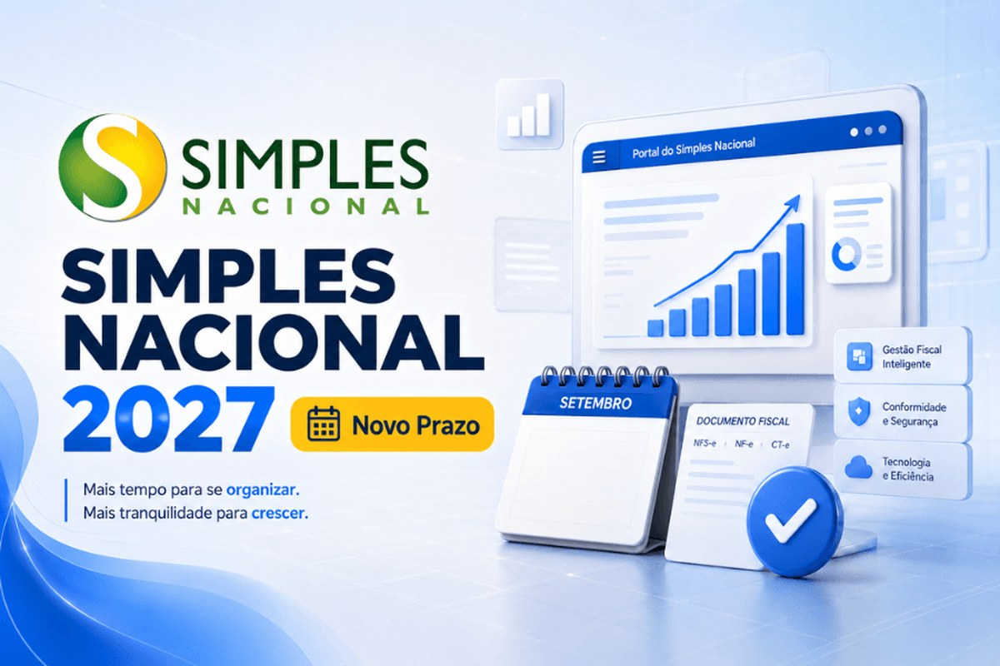

Reforma Tributária
O Simples continua existindo. O que muda para o optante é uma decisão nova — e ela mexe com o crédito que o seu cliente vai poder aproveitar.

O calendário completo da transição, com todos os tributos e todos os anos, está em Reforma Tributária: os prazos e os tributos que mudam. Aqui o recorte é outro: o que especificamente muda para quem é optante do Simples Nacional, e por que 2027 é o ano decisivo.
Essa é a primeira coisa a dizer, porque é a dúvida mais comum. O regime unificado continua previsto na Constituição e segue valendo depois da reforma. O que muda é a forma como o IBS e a CBS aparecem — e a possibilidade de a empresa escolher como recolhê-los.
2027 é o ano em que PIS e Cofins deixam de existir e a CBS entra em vigor. Como esses tributos hoje integram o valor pago no DAS, é em 2027 que a composição da guia começa efetivamente a mudar para o optante. ICMS e ISS, por outro lado, só são extintos em 2033 — então a substituição pelo IBS dentro do Simples acompanha a transição gradual, e não acontece de uma vez.
A Emenda Constitucional nº 132/2023 abriu uma faculdade ao optante do Simples: ele pode apurar e recolher o IBS e a CBS pelo regime regular — isto é, separadamente —, hipótese em que as parcelas relativas a esses tributos deixam de ser cobradas dentro do regime único. Os demais tributos continuam no DAS.
São, portanto, dois caminhos:
A escolha acima parece burocrática, mas é comercial. Quando o optante permanece no regime único, o cliente não optante que compra dele pode se creditar de IBS e CBS em montante equivalente ao cobrado por meio do regime único — ou seja, limitado ao que estava embutido no DAS, que tende a ser bem menor do que o débito integral desses tributos.
Quando o optante escolhe o regime regular, o cliente passa a se creditar do valor cheio. Em compensação, a empresa assume a apuração normal de IBS e CBS — com créditos próprios sobre as suas compras, mas também com mais obrigações.
A LC nº 214/2025 criou a figura do nanoempreendedor — a pessoa física com receita bruta anual inferior a metade do limite do MEI —, que fica fora da condição de contribuinte de IBS e CBS, salvo se optar pelo regime regular. É uma faixa nova, abaixo do MEI, que ainda vai ser detalhada pela regulamentação.
A escolha entre regime único e regime regular não é definitiva para sempre, mas também não é algo para resolver na véspera: ela depende de uma análise de margem, de perfil de cliente e de anexo — o tipo de conta que a LEVEGHIN faz com o cliente, e não para o cliente. Se a sua empresa vende para outras empresas, vale começar essa conversa antes de 2027, e não durante.